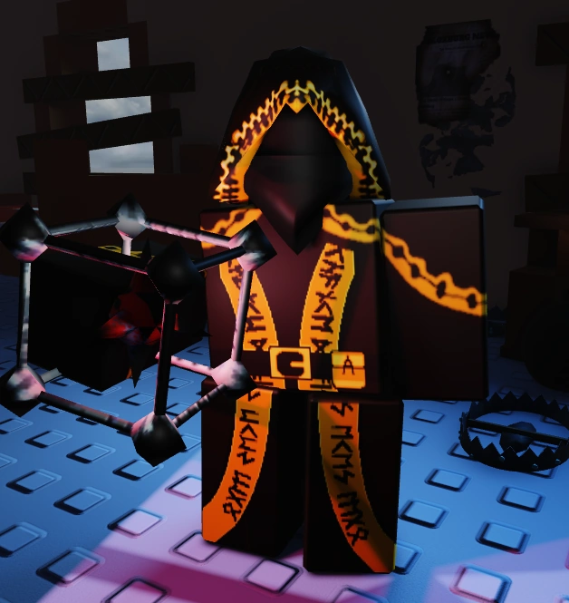

Taph
🔗🚶♂️🐌⚠️👥
👁️🗨️💣💥❓💫
🔗🚶♂️🐌⚠️👥
👁️🗨️💣💥❓💫
| Description | Price | Ability 1 | Ability 2 |
| BOOM BOOM BOOM! - 90Hp | 600$ | Tripwire-Keybind Q-Cooldown 25s Taph places a tripwire on the ground in order to weaken the killer and alert other survivors about their presence. There is a limit of 3 tripwires for each Taph. If a Taph attempt to place another tripwires after reaching the limit, the first one will disappear similar to John doe's Digital Footprint. When the killer walks over a tripwire, all survivors within 100 studs of Taph have the killer's aura revealed for 8 seconds and the killer gains Slowness II for 4 seconds. | Tripmine-Keybind E-Cooldown 40s Taph arms a Subspace Tripmine and throws it on the ground in front of himself. The tripmine will go semi-invisible after placing. The tripmine will slightly reveal itself every 13 seconds. When the killer gets within 16 studs of it, it detonates after 0.5 seconds, and they get Helpless I for 3 seconds and Subspaced III making the killer's vision have a very dark pinkish filter for 5 seconds and forcing their camera/screen in a certain direction. If Taph is surrounding the Subspace Tripmine as it explodes, he will get Subspaced III as well. |